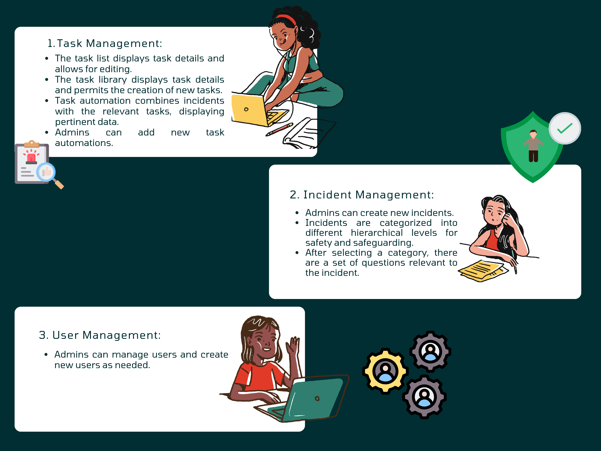
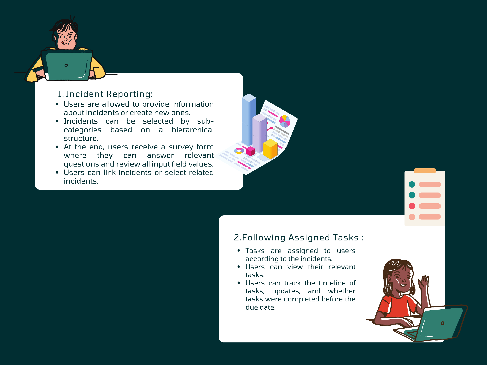
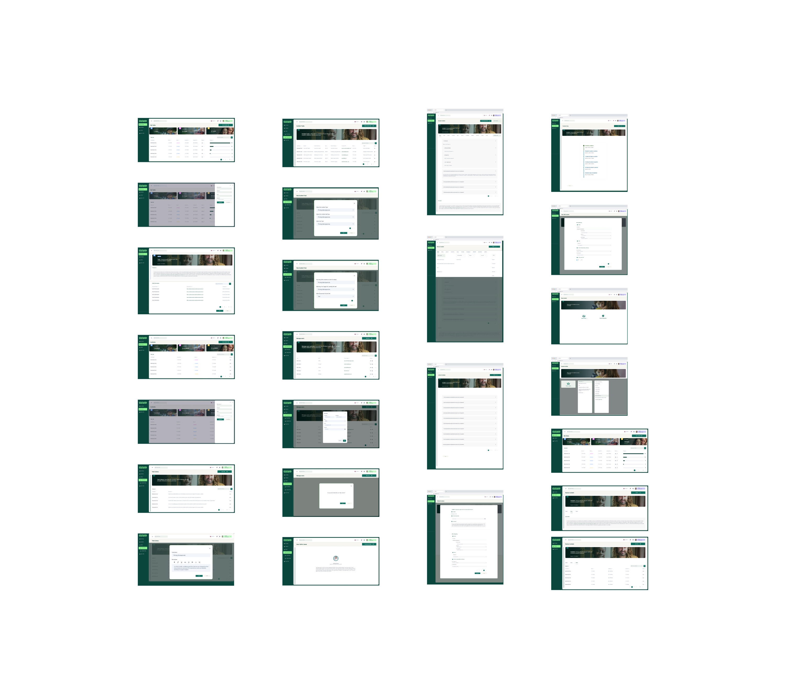

Responsible for leading the UX research, workflow, design, and testing phases.
Collaborated closely to implement UX recommendations.
Work closely with customers,BA and PM to understand the business requirements.

Provided a SaaS product for children's charities. Guided by a commitment to listening, acting, and
advocating for the safety of at-risk children, developed family support programs and services to
empower children to realize their full potential.
This dashboard is designed for a nonprofit organization.It's used to visualize their data
by connecting to their existing operational systems , databases and visualizing millions of data
points crucial to the operations of organizations.
Addressing the challenge involves extracting and categorizing incidents faced by children, ensuring key details like dates are captured. Subsequently, tasks and solutions are assigned based on the categorization to address each incident appropriately.
Given their sole reliance on a web application, the task at hand involves constructing a B2C Dashboard tailored to monitor customer behavior comprehensively. This entails tracking feature usage , event occurrence, and user activity meticulously. Additionally, employing funnel analysis facilitates the breakdown of the onboarding process to pinpoint any friction points. Utilizing Flow analytics further aids in evaluating the efficacy of onboarding strategies, thereby identifying key drivers of success.
 The Problem
The Problem

The insights from user interviews provide valuable guidance for the design and implementation ,
aiming to address user preferences and pain points to enhance the overall
onboarding experience for potential customers.
I've gathered insights from their website and social media platforms.By addressing these
findings and implementing strategic changes, Barnardo's we were able to
enhance the user experience, reduce drop-off points, and ultimately improve the acquisition
process for potential customers.

The primary goal is to streamline the customer acquisition process for Barnardos's by improving the
overall user experience, reducing barriers that may lead
potential customers to explore alternative solutions.

This organizational data that allows users to view, track, and analyze key performance indicators (KPIs) and other metrics to understand how an organization is performing.
[[Sorry, Limited the access to full project]]
After the Demo presentaton client said "superb work, we should develop this! clear design"


Developed by Erandi 2024